Differentiability and Continuity
5.3.1 Theorem. If a function f is differentiable at x0, then f is continuous at x0.
Proof. Since f is differentiable at x0, f'(x0) exists and is given by
Continuity of f at x0 implies that limh ⟶ 0 f(x) = f(x0) or, equivalently,
limh ⟶ 0 f(x) − f(x0) = 0
Expressing this in terms of the variable h = x − x0, and multiplying and dividing by h we have
therefore limh ⟶ 0 f(x) = f(x0) and f is continuous at x0. □
As a consequence of the previous theorem, discontinuous functions cannot be differentiable. The converse of the theorem is not true, as we shall se in the next section: differentiability is a stronger property than continuity.
Example 5.3.2. The derivative of a function f at x0 exists if and only if both the left-hand derivative at x0 and the rigt-hand derivative at x0 exists and are equal. If f is differentiable at x0, then f is continuous at x0. In order to show that a function f is not differentiable at x0, we can show that the function f is not continuous at x0, or alternatevely that the left/right-hand derivative at x0 do not exist.
For example, the piecewise defined function
is defined on the interval (−∞, ∞). It is continuous on the intervals (−∞, 0) and (0, ∞), but it is not continuous at x = 0, since
limx⟶0− y(x) = 2 ≠ −1 = limx⟶0+ y(x)
Because y(x) is not continuous at x = 0, the function y(x) is not differentiable at x = 0; however, y(x) is differentiable on (−∞, 0) and (0, ∞). In fact,
■
Corner Points
A continuous function need not to be differentiable, so the converse of Theorem 5.3.1, does not hold. The absolute value function |x| is probably the best known example of a continuous function that is not differentiable.
As we have remarked, if f is differentiable at x, then the right-sided and left-sided derivatives must exist and be equal. In the case of absolute value function, f(x) = |x|, f(x) = x for x > 0 and f(x) = −x for x < 0; We have f'(x) = +1 for x > 0 and f'(x) = −1 for x < 0. To calculate the derivative at the origin we use the definition of derivative
[f(h) − f(0)] / h = |h|/h
thus, if h ⟶ 0+, |h| = h and the limit is 1, while if h ⟶ 0−, |h| = −h and the limit is −1.
Since the limit of the increment ratio does not exist, f is not differentiable at x = 0. From the graph of |x| we recognize that at the origin the tangent line is not well-defined, we call this point a corner point. At a corner point, the slopes of the secant lines have different limits from the left and from the right, and hence the two-sided limit that defines the derivative does not exist.
However, the absolute value function is differentiable on (−∞, 0) and (0, ∞), for it coincides with the line y = x when x > 0 and with y = −x for x < 0. Its derivative is
Vertical Tangents
At a point of vertical tangency the slopes of the secant lines approach +∞ or −∞ from the left and from the right, so again the limit that defines the derivative does not exist.
This is the case for the cube root f(x) = x1/3 so that f'(x) = 1/(3x2/3). This function is continuous for all x; it derivative tends to +∞ for x ⟶ 0. We can say that its graph has a vertical tangent at x = 0: the line x = 0 (the y-axis). Note that in the case of |x| the two tangent lines were different, here it's the same. We say that the graph of x1/3 has a vertical tagent at x = 0.
Cusps
When the graph of a function comes to a sharp point, we say that point on the graph is a Cusp. A cusp, can be traced without lifting your pencil, so the function is continuous at a corner or cusp.
Where f' approached +∞ from one side of x0 and −∞ from the other side, we say that the graph has a cusp at x0. For example the function f= x2/3 has a cursp at x = 0. Differently from |x|, which has two limits "that disagree" that disqualifies it from having a tangent line there, in the case of x2/3 the tangent line is the same.